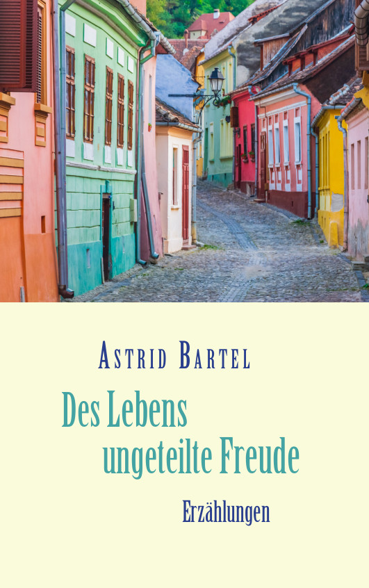

Des Lebens ungeteilte Freude

Von Menschen und Schicksalen quer durch 65 Jahre Zeitgeschehen: Einfühlsam und
mit feinem Humor erzählt Astrid Bartel in ihrem neuen Buch Geschichten aus den
Dörfern und Städten Rumäniens und Deutschlands. Die Erzählungen der gebürtigen
Siebenbürgerin sind zum größten Teil autobiografisch. Besonders sind die in
Rumänien spielenden Geschichten, denn das Leben inmitten des Völkergemischs
eines längst untergegangenen österreich-ungarischen Kaiserreichs und mitten in
einem Land, das den Sozialismus aufbaute, war ein Alltag voller Überraschungen,
Kämpfe, Kompromisse und politischer Schwierigkeiten. Die größte Herausforderung
jedoch war, zwischen der Liebe zur Heimat und der Freiheit wählen zu müssen.
Bestellinformationen:
Bestellbar in jeder Buchhandlung, bei Amazon
und BoD (Hardcover,
Paperback,
E-Book)
ISBN 973-3-7557-3396-6 (Hardcover) 24.90 Euro
ISBN 978-3-7557-1708-9 (Paperback) 14.90 Euro
ISBN 978-3-7562-7906-7 (E-Book) 5.49 Euro